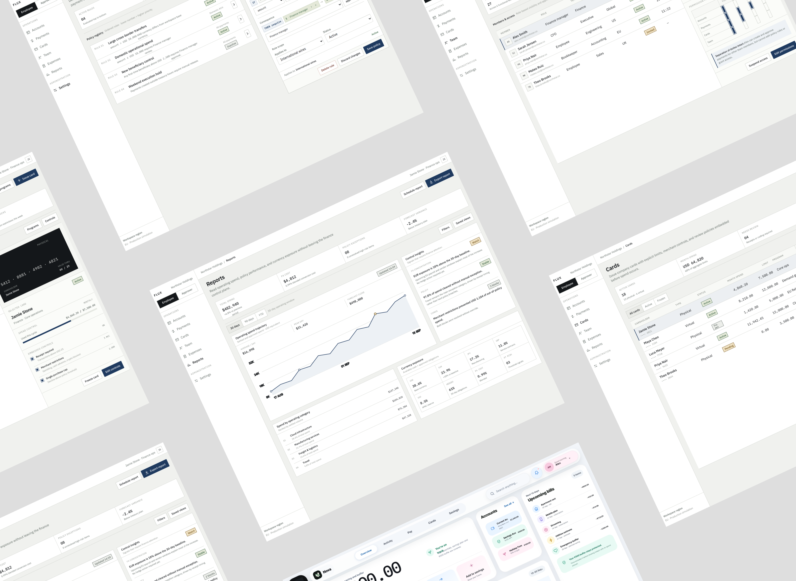

FINTECH / APPROVALS / SPEND CONTROL / AUDITABILITY
Flux
A finance operations concept that keeps payment approvals, permissions and the decision trail in context.

Keep financial control visible as money moves.
The project brief centres on finance teams managing international payments. A disconnected approval chain makes the next approver, policy trigger and result harder to explain.
I owned product design and the working prototype: translating the brief into information architecture, approval workflows, permission rules and explicit operational states.
Make the control chain understandable.
-
Keep the payment and its approvals together
Connect initiation, policy evaluation, sequential review and execution to one record so context does not disappear between steps.
-
Prefer readable rules over a visual node editor
Use explicit IF/THEN policies and table-first density to support comparison and audit work without unnecessary interaction complexity.
-
Design beyond the happy path
Treat rejection, expiry, failure and permission denial as first-class states, alongside role-specific actions and a retained activity trail.
What this work demonstrates.
The working concept makes the approval model, operational hierarchy and recovery states inspectable. It demonstrates product and systems reasoning without claiming production banking impact.
Independent concept. Finance roles and workflows come from the project context, not interviews. Practitioner validation, customer adoption and operational impact remain unmeasured.
The next test should ask finance operators to explain a blocked payment, make an approval decision and predict the effect of a policy change.
Evidence details and validation plan
Supporting source audit and planned validation. The audit records an earlier source review; this narrative edit adds no user research, measured outcomes or team claims.
What I owned, chose, traded off — and what is still unknown
A recruiter-scan summary derived from the public case source. Unknowns stay explicit instead of being converted into team, stakeholder, failure or outcome claims.
Product designer / prototype author
Independent project; no separate PM, engineering or stakeholder team is documented in this public case.
NOT EXPLICIT — the case describes the solution, but the governing product or technical constraint is not isolated as a decision input.
3 documented directions/choices: Visual node-editor policy builder / Restricted accent color / Role + permission pressure
Restricted accent color — Navy and semantic statuses carry meaning without making every surface compete for attention.
Explicit trade-off section: Operational clarity beats consumer-fintech decoration
Implementation reality: Independent concept + working prototype. No verified engineering-collaboration record is present in this public case.
Local component, state or system implications are documented in the case; downstream production impact is not measured.
NOT AVAILABLE — no verified failure, rejected release or project pivot is documented in this public case.
PLANNED / NOT MEASURED. Baseline: Needs first operations benchmark.
Run the first benchmark against the predefined A26 target; if the threshold is missed, revise the selected model before adding more polish or scope.
Three things a reviewer should not have to infer
Success criteria before success claims
≥ 4/5 participants correctly explain route status and recover a failed settlement path. This is a decision threshold for future validation, not a measured outcome.